Learned 2D Generation versus Disposable 3D Proxies for Eight-Direction Pixel-Art Sprites
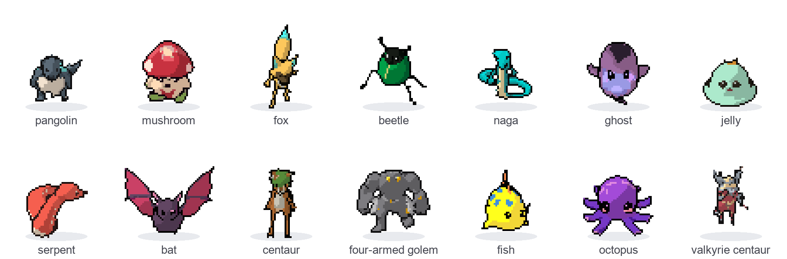
Top-down pixel-art games and RPGs need every character drawn from eight directions with a walk cycle, and the eight drawings must agree with each other. None of the models we tried produces such sheets for new characters consistently. A pipeline does.
We followed two routes on two machines. Route A, on an NVIDIA RTX 3090, trained three generations of a sprite-sheet generator on 2,984 community sheets: predicting pixel roles instead of colors made creatures legible, but with 2,603 unique designs it memorized after about 30,000 steps. Route B, on an Apple M5, routes a one-line idea through a disposable 3D proxy: a local language model rewrites the idea for one of thirteen body plans, FLUX.2 [klein] draws a concept, Pixal3D lifts it to a mesh, Blender rigs and renders eight directions, and a 3D-aware pixelization reduces each frame. Route B won: no sprite data, no training, eight true directions, about four and a half minutes per creature.
Eight pages in ACM conference format. Click a page to read it.
The PDF can't move, so here they turn. Each creature rotates through the eight directions of a top-down sprite sheet; because every frame is a render of the same mesh, the shape and markings hold in every direction.
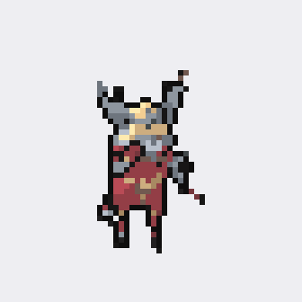
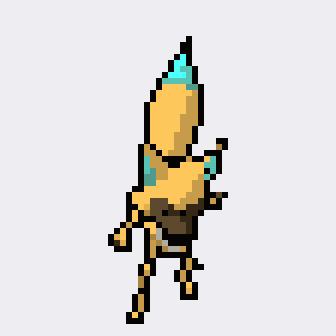
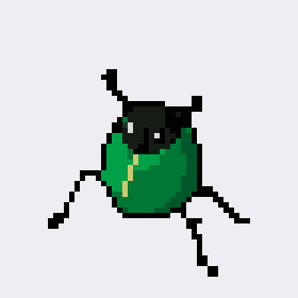
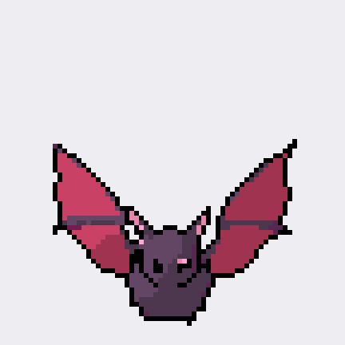
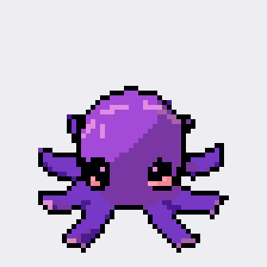
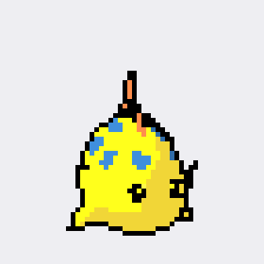
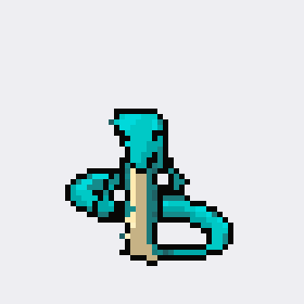
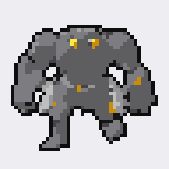
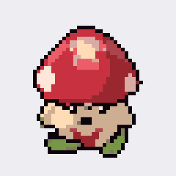
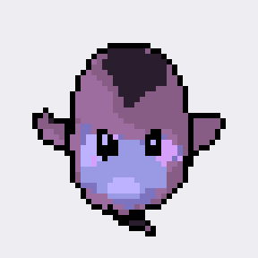
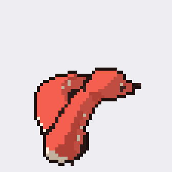
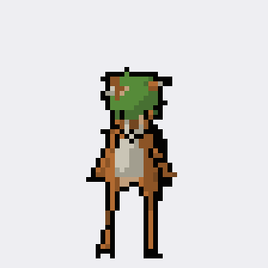
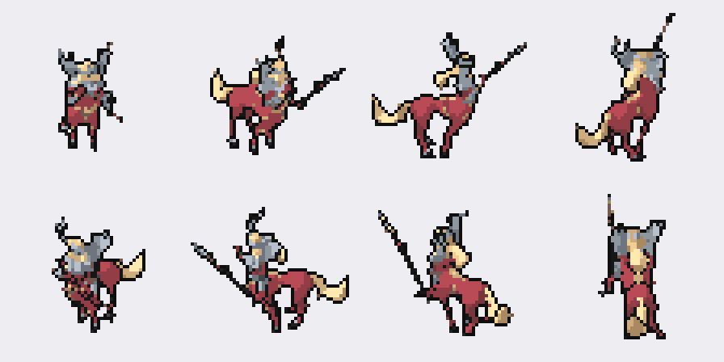
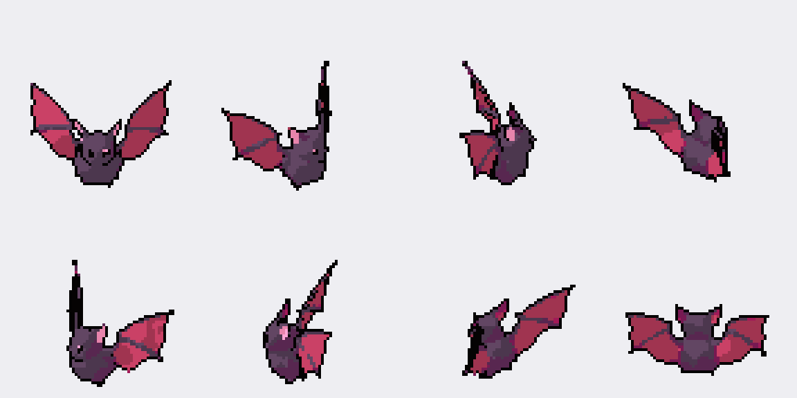
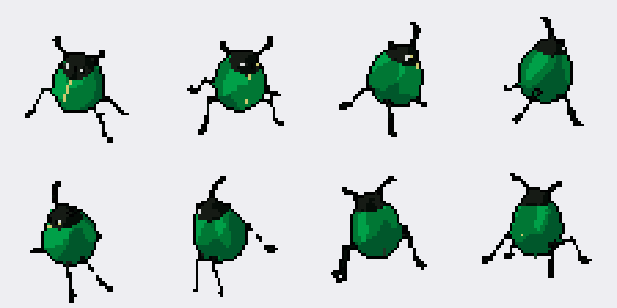
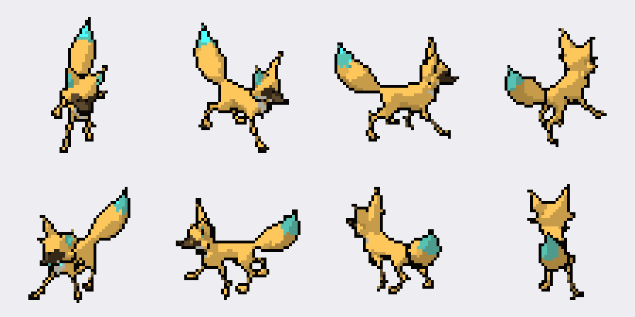
Five local stages. The 3D model exists only to turn and animate the creature; it is thrown away once the frames are pixelated.
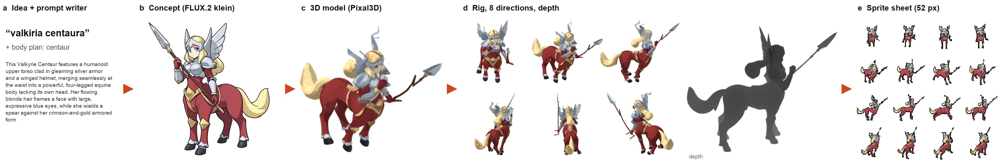
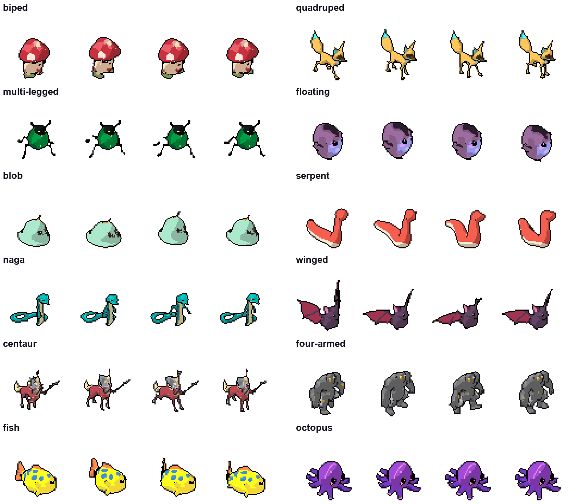
Thirteen body plans, no learned rig. Legs are found by slicing the mesh horizontally and looking for blobs near the axis; insect legs, which the shell joins into one blob, are separated by a morphological opening seen from above. Serpents, fish, wings and octopus tentacles are animated by deforming vertices directly.
Pixelization that knows it came from 3D. Eyes are found once in a front render, tied to a mesh vertex and projected into every frame, stamped only when the depth pass says nothing covers them. Legs thinner than 1.4 sprite pixels are inflated in the mesh before animating, so they stay continuous. Inner lines come from depth jumps. All 32 frames share one palette, pulled toward the concept's colors per hue group.
A writer for ideas in any language. FLUX alone turned "valkiria centaura" into a horse. A local 27B model translates the idea and spells out the body plan and its iconic features first.
Fourteen creatures, twelve body plans. Each pixelization component removed in turn, against a naive downscale with the same palette budget.
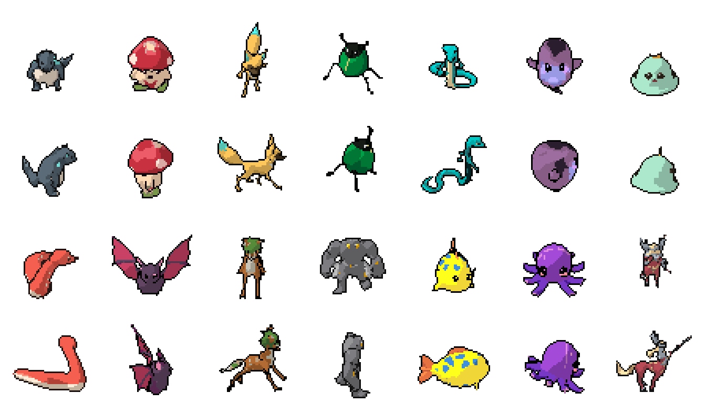
| Variant | Noise % | Fragments | Eyes % | Color |
|---|---|---|---|---|
| Naive downscale | 8.29 | 0.28 | 53.1 | 6.54 |
| No cleanup | 4.94 | 0.03 | 91.3 | 4.75 |
| No projected eyes | 3.27 | 0.03 | 71.9 | 4.50 |
| No concept color | 3.35 | 0.03 | 91.9 | 6.16 |
| No feature protection | 2.88 | 0.03 | 91.9 | 4.47 |
| Full | 3.36 | 0.03 | 91.9 | 4.40 |
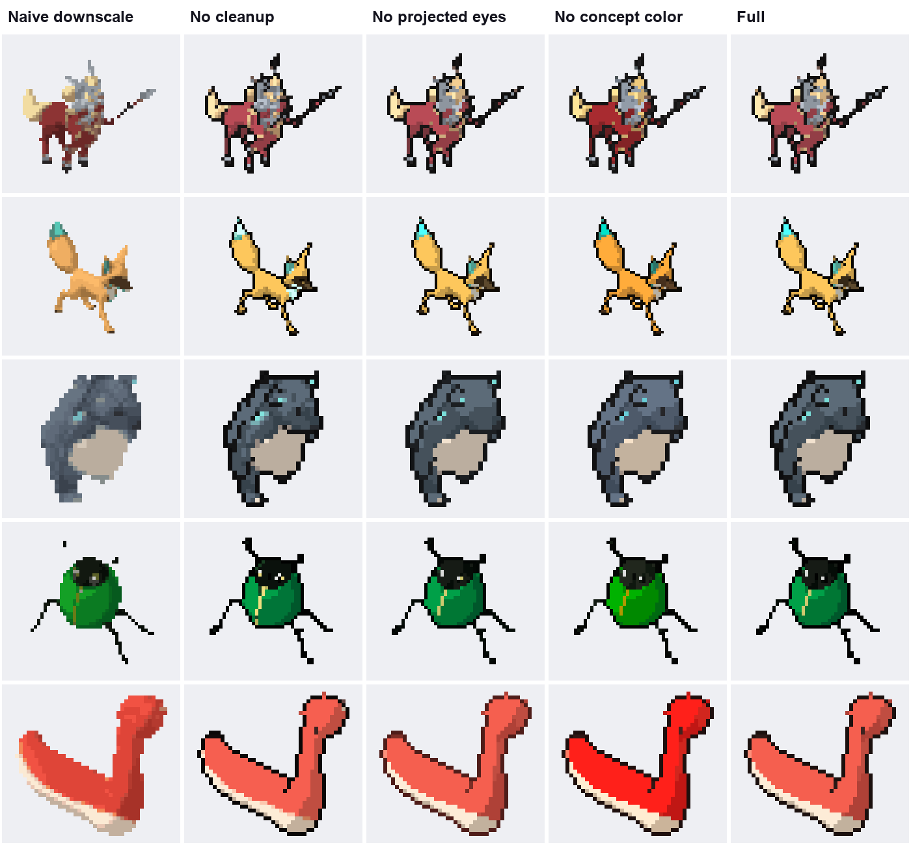
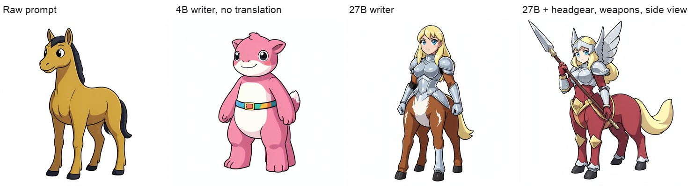
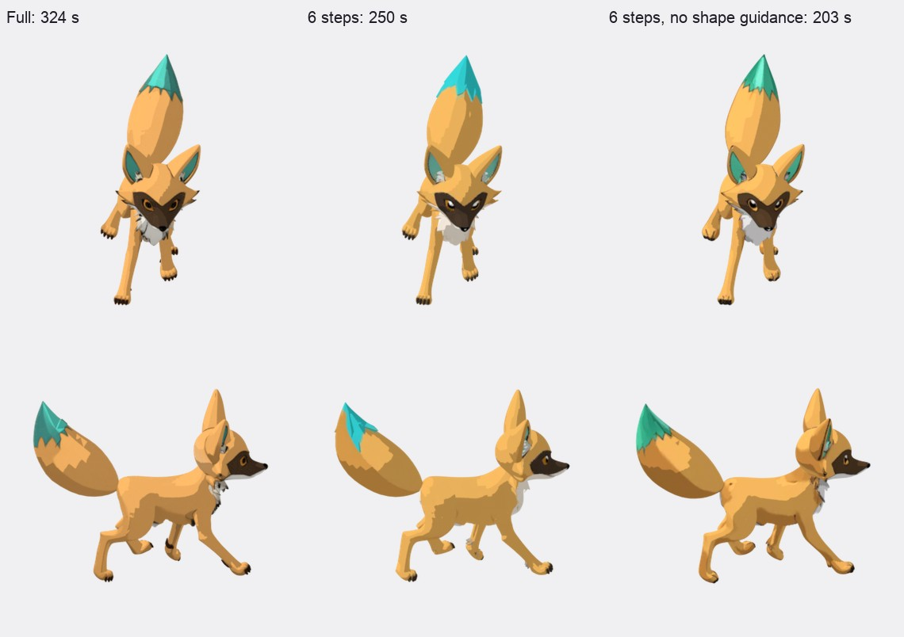
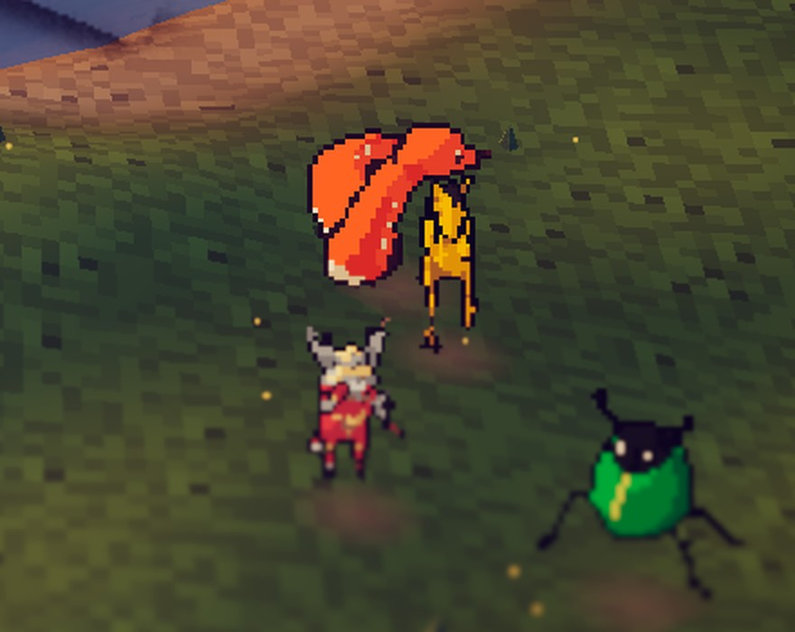
Route A learned sprite sheets directly on an NVIDIA RTX 3090 (about 44 GPU hours). Route B used a disposable 3D proxy on an Apple M5. Both ended at the same insight: 3D works as scaffolding, not as the source of the image.
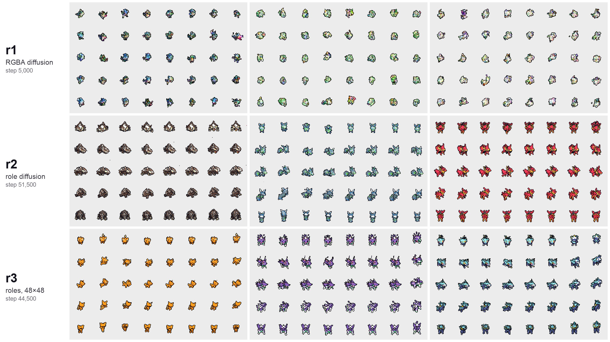
| Route A: learned 2D | Route B: 3D proxy | |
|---|---|---|
| Hardware | NVIDIA RTX 3090 | Apple M5 |
| Training | ≈ 44 GPU hours | none |
| Sprite data | 2,984 sheets, non-commercial license | none |
| New designs | memorizes after ≈ 30k steps | any idea, any language |
| Directions | 5 generated + 3 mirrored | 8 rendered |
| Animation | Walk and Idle, learned | Walk, rule-based, 13 body plans |
| Style | native, real palettes | approximated by pixelization |
| Verdict | bounded by its data | winner: new, consistent characters today |
Art direction without fine-tuning. FLUX.2 has not been fine-tuned to lock one visual style; the concepts share a style only through a hidden template. Even so, splitting the problem by body plan and covering as many body plans as possible with automatic rigging works well in practice.
Learned animation. A text-driven animation model for arbitrary skeletons, UniMate, was released the day this draft was written. It has not been tested in this version.
Toward a single model. Route A failed for lack of data, and Route B is a data generator. Its sheets, converted to pixel roles and multiplied by donated real palettes (between 36 and 498 distinct color families per creature from 2,602 donors) and by mirroring, could build large datasets per body plan. With them, Route A's original topology could learn to generate art with walk cycles directly. Today there are not enough samples to do that without a pipeline.
@misc{bustamante2026words,
author = {Bustamante, Pablo},
title = {From Words to Walk Cycles: Learned 2D Generation versus
Disposable 3D Proxies for Eight-Direction Pixel-Art Sprites},
note = {Preprint draft},
year = {2026}
}